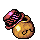
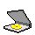
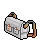
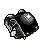
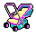
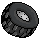
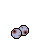
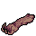

| 名前 | 対応部 | 操作 | 容量 | 買/売 | 説明 | 版 | |
|---|---|---|---|---|---|---|---|
 | 波紋のツボ | 1 | 押す | 3〜6 | 2700 + 100n / 1350 + 100n | ツボを突いて波紋が使えるようになるぞ。 体力も回復し、状態異常が治るぞ。 | 0.13 |
| ダービーのコインケース | 3 | 入れる | 4〜4 | 400 + 100n / 200 + 100n | ダービーのコインケースだ 魂のコインを入れることができるぞ | +α | |
 | 形兆のDISCケース | 4 | 入れる | 3〜6 | 400 + 100n / 200 + 100n | 几帳面な形兆のDISCケースだ DISCが入っているぞ | 0.13 |
| サンジェルマンの紙袋 | 4 | 入れる | 3〜6 | 400 + 100n / 200 + 100n | サンジェルマンの紙袋だ 食料が入っているぞ | 0.13 | |
 | 露伴のカバン | 4 | 入れる | 3〜6 | 400 + 100n / 200 + 100n | 露伴が資料を持ち運ぶ時のカバンだ コミックスが入っているぞ | 0.13 |
| エニグマの紙 | 4 | 入れる | 3〜6 | 2400/1200 | 何でも紙にして保管できるぞ アイテムを自由に出し入れできるぞ | 0.13 | |
| ミキタカのカバン | 4 | 入れる | 3〜6 | 2400 + 100n / 1200 + 100n | 何でも出てくるミキタカのカバンだ アイテムを入れると別のものにしてくれるぞ | 0.13 | |
 | ランドセル | 4 | 押す | 3〜6 | 2600 + 100n / 1300 + 100n | 猫草が入っているランドセルだ 押すと前方に強力な空気弾を発射するぞ | 0.13 |
| サーフィス人形 | 4 | 押す | 3〜6 | 2800 + 100n / 1400 + 100n | 10ターンの間、自分のコピーが出現するぞ 敵はコピー人形を優先して攻撃するぞ | 0.13 | |
 | 乳母車 | 4 | 入れる | 3〜6 | 4600 + 100n / 2300 + 100n | 透明な赤ちゃんが入っているようだ 入れたものが見えなくなってしまうぞ | 0.13 |
| ホルマジオのビン | 5 | 押す | 3〜6 | 2500 + 100n / 1250 + 100n | 敵に投げると小さくして入れられるぞ 押すと目の前に混乱して出てくるぞ | 0.13 | |
| カルネの死体 | 5 | 入れる | 3〜6 | 4600 + 100n / 2300 + 100n | カルネの死体だ 入れたものは喰われて消えるぞ | 0.13 | |
 | トラクターのタイヤ | 6 | 入れる | 10〜10 | 400 + 100n / 200 + 100n | F・FがDISCを保管しておいたタイヤだ DISCがたくさん入っているぞ | 0.13 |
| グッチョの死体 | 6 | 入れる | 3〜6 | 1600 + 100n / 800 + 100n | グッチョの死体だ DISCを入れると歌いだすぞ | 0.13 | |
| DIOの骨 | 6 | 入れる | 3〜6 | 4600 + 100n / 2300 + 100n | 新しいものを生み出すDIOの骨だ 装備DISCが合成されるぞ | 0.13 | |
| エルメェスのアレ | 6 | 入れる | 3〜6 | 4600 + 100n / 2300 + 100n | キッスのシールで入れたものが分裂するぞ 装備品は数値も分裂するぞ | +α | |
 | 聖人の眼球 | 7 | 入れる | 3〜6 | 2400 + 100n / 1200 + 100n | 聖人の遺体の一部分だ 持ち物が識別されるぞ | 0.13 |
 | 聖人の左腕 | 7 | 入れる | 3〜6 | 2400 + 100n / 1200 + 100n | 聖人の遺体の一部分だ アイテムの呪縛や爆弾化を解除するぞ | 0.13 |
| 聖人の脊椎 | 7 | 押す | 3〜6 | 2900 + 100n / 1450 + 100n | 他の場所に一瞬にして移動するぞ | 0.13 | |
| グッチのバッグ | 入れる | 3〜6 | 4600 + 100n / 2300 + 100n | 露伴のばあちゃんの形見だ 金を入れるとなにか良い事があるぞ | 0.15 |